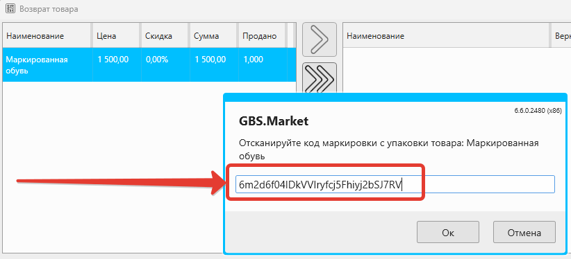

В этой статье рассмотрим процесс оформления возврата товаров от покупателя по ранее совершенной продаже
Полезное видео
Оформление продажи
Возврат товаров от покупателя возможен только в том случае, если эти товары были проданы через программу.
Полезные материалы
Оформление возврата от покупателя
Возврат ранее купленных товаров происходит через журнал продаж. На главной форме откройте Отчеты – Журнал продаж.
Поиск продажи для возврата
В открывшемся окне необходимо найти ту продажу, для которой планируется выполнить возврат. Для удобства поиска можно воспользоваться фильтрацией. Например, вы можете найти продажу по:
- дата
- название товара
- штрихкод товара
- категория товара
- номер чека
- покупатель
- и другим параметрам
На скриншоте выше показаны результаты поиска продажи, в которых есть товар с названием содержащим слово "чехол" за последний квартал.
После фильтрации найдите в списке продажу, которая содержит возвращаемый товар.
Выполнение возврата товаров
Выберите в списке продажу, в рамках которой были проданы возвращаемые товары и нажмите кнопку "возврат".
После этого программа отобразит окно для выбора возвращаемых товаров.
Выбор товаров для возврата
В левом списке выберите товар и нажмите кнопку > или дважды кликните на возвращаемый товар.
Программа запросит количество к возврату.
Укажите возвращаемое количество и нажмите "Сохранить". Товар появится в правом списке.

Если необходимо, добавьте и другие товары из продажи в список для возврата. А затем нажмите "Продолжить"
Завершение возврата
После нажатия кнопки "Продолжить" необходимо указать причину возврата. Например, "брак".
Если настроено несколько способов оплаты, то далее программа запросит выбор способа, которым будут возвращены денежные средства покупателю.
Полезные материалы
Укажите способ и нажмите "Вернуть".
Если к программе подключен платежный эквайринг-терминал и выбран способ "Карта" – программа отправит команду на терминал для возврата средств. Для возврата обычно необходимо использовать ту карту, с которой был совершен платеж.
Печать чека возврата прихода
Если продажа, по которой выполняется возврат, была фискальной и к программе подключена онлайн-касса (фискальный регистратор), то в после нажатия кнопки "Вернуть" программа распечатает чек типа "возврат прихода".
Полезные материалы
Пример чека возврата прихода
Просмотр возвратов от покупателей
Карточка продажи
Для конкретной продажи можно посмотреть информацию о совершённых по ней возвратам. Такая информация доступна в карточке продажи, которую можно открыть из журнала продаж.

На вкладке "Возвраты" можно увидеть список товаров, которые были возвращены.
А на вкладке платежи можно посмотреть движение денежных средств по данной продаже, включая факт выдачи денег по факту возврата.
Сводный отчет
Общую информацию о возвратах, а именно:
- количество возвратов
- стоимость возвращенных товаров
- количество возвращенных товаров
можно посмотреть в сводном отчете.
Нажав на ссылку "Возвраты" можно перейти к журналу возвратов.
При необходимости можно выбрать запись и открыть для нее карточку продажи.
Ограничение прав доступа
Как и другие действия, выполнение возврата может быть ограничено правами доступа в карточке группы сотрудников.
Полезное видео
Примечания
Если продажа, по которой выполняется возврат, была закреплена за покупателем, то будут выполнены следующие действия:
- сумма покупок будет уменьшена на сумму возвращаемых товаров
- сумма баллов, полученных за данный товар, и сумма баллов, потраченных на эту покупку, будут пересчитаны
Вопросы и ответы
Как происходит возврат продажи, оформленной в долг (полностью или частично)
При оформлении возврата товаров по продажам, которые не были оплачены или оплачены частично есть ряд моментов, на которые стоит обратить внимание.
Общее правило возврата продаж в долг
Независимо от того, насколько была оплачена продажа (не оплачена, оплачена частично), подразумевается, что в момент возврата покупателю будут отданы денежные средства за возвращаемые товары на сумму, не превышающую ранее внесенную сумму.
Ниже рассмотрим частные случаи.
Возврат для продажи, оформленной в долг полностью
Если по продаже не было внесено платежей, то при попытке оформить возврат программа покажет уведомление:
Сумма к возврату меньше общей стоимости возвращаемых товаров, т.к. продажа была оформлена в долг или часть продажи была оплачена баллами.
Стоимость возвращаемых товаров: 115,00
Сумма к возврату: 0,00
Таким образом:
- покупателю не происходит возврат денежных средств при получении товаров от него
- задолженность по этой покупке уменьшится на сумму возвращаемых товаров
Возврат в случае, если по продаже был внесен платеж на сумму больше, чем сумма возвращаемых товаров
Рассмотрим следующий случай:
- оформлена продажа на 500 рублей
- покупатель оплатил только 300 из 500 рублей и остается должен 200 рублей
Через какое-то время покупатель приносит часть товаров из этой продажи на возврат на сумму 100 рублей.
Т.к. ранее внесенной суммы (300 рублей) достаточно для того, чтобы вернуть сумму за товары (100 рублей) программа не будет сообщать, что продажа оплачена частично. Подразумевается, что в этой ситуации продавец возвращает деньги за товар, несмотря на то, что клиент остался должен.
Важно
Может показаться, что раз клиент вернул часть товаров и все еще должен денег, его задолженность должна уменьшиться. Но в описанной ситуации автоматическое уменьшение задолженности не произойдет.
Если подразумевается, что возврат товара должен уменьшить долг, то:
- необходимо оформить возврат, не возвращая клиенту деньги за товар (в нашем примере 100 рублей)
- сразу же внести платеж по его задолженности на сумму возвращенных товаров (100 рублей)
Возврат в случае, если по продаже был внесен платеж на сумму меньше, чем сумма возвращаемых товаров
Например, может возникнуть следующая ситуация:
- оформлена продажа на 500 рублей
- покупатель оплатил только 300 из 500 рублей и остается должен 200 рублей
Через какое-то время покупатель приносит часть товаров из этой продажи, чтобы вернуть, на сумму 400 рублей.
Т.к. ранее внесенной покупателем суммы (300 рублей) недостаточно, чтобы вернуть деньги за товары (400 рублей), программа сообщит об этом:
Сумма к возврату меньше общей стоимости возвращаемых товаров, т.к. продажа была оформлена в долг или часть продажи была оплачена баллами.
Стоимость возвращаемых товаров: 400,00
Сумма к возврату: 300,00
Таким образом покупателю возвращается ранее внесенная сумма (300 рублей), а задолженность при этом уменьшается (до 100 рублей). Уменьшение задолженности происходит, т.к. в продаже фактически остались товары на сумму 100 рублей (товары на 400 из 500 рублей покупатель вернул).
Как происходит изменение выручки и прибыли после оформления возврата?
При оформлении возврата от покупателя будут изменены выручка и прибыль, отображаемые в сводном отчете:
- выручка будет уменьшена на розничную стоимость товара
- прибыль будет уменьшена на закупочную стоимость товара
Важно
Обратите внимание, что выручка и прибыль всегда уменьшаются на ту дату, когда была совершена продажа. Это произойдет даже в том случае, если возврат был сделан в другой день.
Например, если покупка была совершена 10 сентября, а возврат сделан 12 сентября, то выручка и прибыль будут уменьшены за 10 сентября.
В журнале продаж изменение выручки и прибыли зависит от опции При возврате уменьшать кол-во в журнале продаж в настройках программы. Но изменение выручки так же произойдет в день продажи, а не в день возврата.
Как происходит возврат товаров, подлежащих обязательной маркировке?
При добавлении маркированного товара в список на возврат, программа будет запрашивать код маркировки, подставляя при этом код, указанный при продаже.
Необходимо проверить, что этот код маркировки совпадает с кодом возвращаемого товара. Если есть сомнения, необходимо отсканировать код с товара.
Важно
Обратите внимание, если через программу вы выполните возврат не того товара (с другим кодом маркировки), то не сможете продать продать товар повторно, т.к. он не пройдет проверку в рамках разрешительного режима!
В процессе завершения возврата кассовая программа GBS.Market формирует данные для фискального чека, передаваемые в онлайн-кассу. Онлайн-касса в свою очередь передает данные в ОФД. Из ОФД информация о том, что маркированный товар с конкретным кодом маркировки возвращен, передается в ГИС МТ (Честный знак), где изменяется статус данного кода на "в обороте".
Подробнее о требованиях по возврату маркированных товаров в ГИС МТ (Честный знак) можно узнать по ссылке.